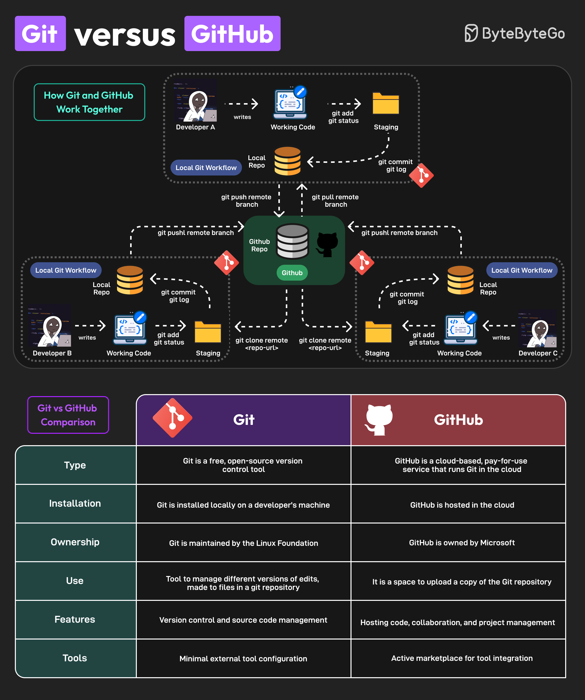
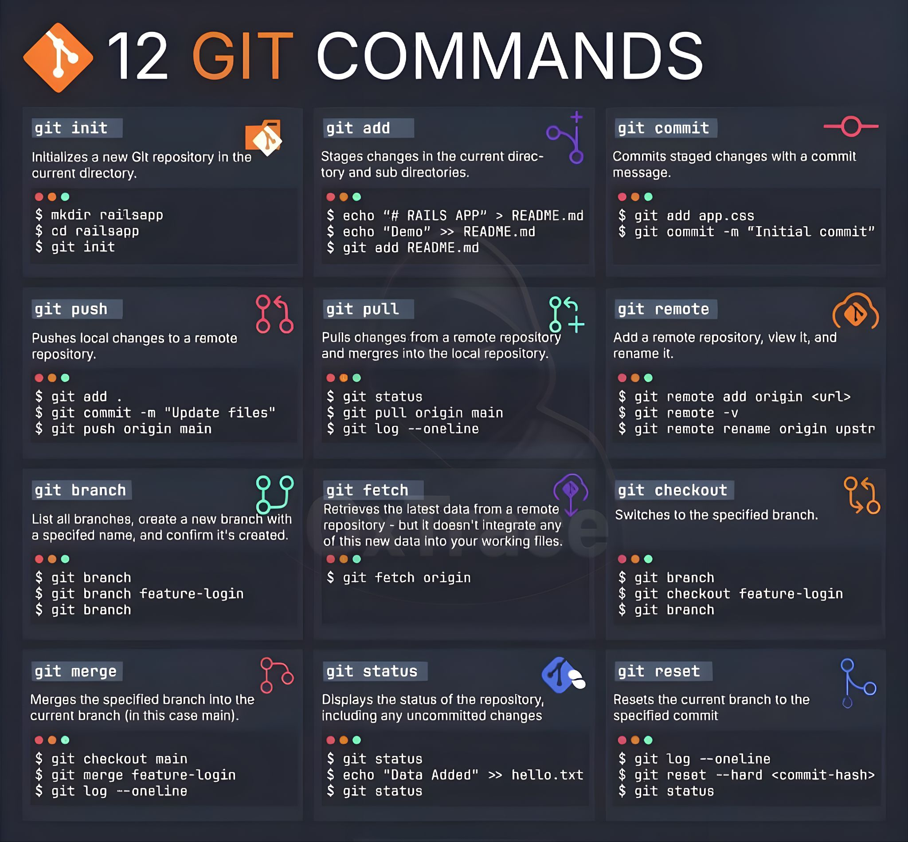

Clase 2: Introducción a herramientas de control de versiones Git y Github#
Objetivos de hoy#
Entender qué son las herramientas de control de versiones.
Familiarizarse con Git y Github.
Implementar scripts de bash para el manejo de versiones.
1. Introducción: ¿Por qué necesitamos Git?#
Todo científico ha vivido esta pesadilla en su computadora:
analisis_espectros.py
analisis_espectros_final.py
analisis_espectros_final_de_verdad.py
analisis_espectros_final_v2_corregido_por_el_tutor.py
Este método de guardar versiones es propenso a errores, hace imposible saber qué cambió exactamente entre la versión 1 y la 4, y arruina la colaboración. La solución estándar en la industria y la academia es Git.
Git vs. GitHub: Aclarando la confusión#
Git: Es el motor. Es un programa de línea de comandos (como los que vimos la semana pasada) que vive localmente en tu computadora. Rastrea los cambios en tus archivos a lo largo del tiempo.
GitHub: Es la nube. Es una plataforma web de Microsoft que aloja repositorios de Git. Es el “Google Drive” del código. Permite respaldar tu trabajo y colaborar con astrofísicos en todo el mundo.

Imagen tomada de: Link
Las 3 “Zonas” de Git (El Modelo Mental)#
Para usar Git sin frustrarse, debes entender que tus archivos pasan por tres estados:
Directorio de Trabajo (Working Directory): Tu carpeta actual. Donde editas tu código.
Área de Preparación (Staging Area): Una “sala de espera”. Aquí pones los archivos modificados que quieres empaquetar en tu próxima versión.
Repositorio Local (.git): El historial permanente. Cuando guardas algo aquí, Git le toma una “fotografía” (snapshot) que vivirá para siempre.
2. La Caja de Herramientas: Comandos Esenciales#
Antes de empezar, debemos presentarnos ante Git por única vez en nuestra computadora:
git config --global user.name "Tu Nombre"
git config --global user.email "tu_correo@universidad.edu"
Comandos de Creación y Estado#
git init: Convierte una carpeta normal en un repositorio de Git. Crea una carpeta oculta .git.
git clone [URL]: Descarga un repositorio completo desde GitHub a tu computadora.
git status: Tu mejor amigo. Te dice en qué estado están tus archivos (modificados, en staging, o guardados). ¡Úsalo todo el tiempo!
Comandos de Guardado (El Flujo Diario)#
git add [archivo]: Mueve un archivo modificado al Área de Preparación (Staging). Si usas git add ., preparas todos los archivos modificados.
git commit -m “Mensaje descriptivo”: Toma la “fotografía” de los archivos en staging y la guarda en el historial con un mensaje que explica qué cambiaste y por qué.
Comandos de Sincronización (Conectando con GitHub)#
git push: “Empuja” tus commits locales hacia el repositorio en GitHub (Nube).
git pull: “Jala” los cambios más recientes de GitHub hacia tu computadora local.
Ejemplo de Flujo de Trabajo (Workflows)#
A continuación, veremos tres escenarios reales que vivirás como astrónomo y cómo resolverlos usando la consola.
El Investigador Solitario (Local)
Escenario: Estás empezando un nuevo proyecto para analizar la curva de luz de una estrella variable. Quieres tener control de versiones localmente, sin internet.
Paso a paso en la terminal:
# 1. Creas la carpeta de tu proyecto y entras en ella
mkdir curva_luz_proyecto
cd curva_luz_proyecto
# 2. Inicializas Git (enciendes el motor)
git init
# 3. Creas tu primer script de Python
echo "print('Iniciando analisis de curva de luz')" > analisis.py
# 4. Verificas el estado. Git te dirá que 'analisis.py' no está rastreado (untracked)
git status
# 5. Lo agregas al área de preparación (Staging)
git add analisis.py
# 6. Haces el commit (TOMAS LA FOTOGRAFÍA)
git commit -m "Commit inicial: creo el script base para curvas de luz"
# 7. Si modificas el archivo, repites el ciclo: add -> commit
echo "import numpy as np" >> analisis.py
git add analisis.py
git commit -m "Añado la libreria numpy para calculos matematicos"
El Respaldo Científico (Local hacia la Nube)
Llevas un mes trabajando en tu proyecto local (paso anterior). Si tu computadora se daña, pierdes tu tesis. Necesitas subir esto a GitHub.
Paso a paso:
Vas a la página web de GitHub, inicias sesión y haces clic en “New Repository”. Lo llamas curva_luz_proyecto. No le agregas ningún archivo extra.
GitHub te dará un enlace (URL) que termina en .git.
Vuelves a tu terminal y vinculas tu carpeta local con ese enlace en la nube:
# 1. Le decimos a Git dónde está el repositorio remoto y lo llamamos "origin"
git remote add origin [https://github.com/TU_USUARIO/curva_luz_proyecto.git](https://github.com/TU_USUARIO/curva_luz_proyecto.git)
# 2. Renombramos nuestra rama principal a "main" (estándar actual)
git branch -M main
# 3. Empujamos todo nuestro historial local hacia GitHub
git push -u origin main
A partir de ahora, cada vez que hagas un git commit local, solo tendrás que escribir git push para respaldarlo en la nube.
El Estudiante Colaborativo
El profesor de Minería de Datos ha subido un repositorio con los datos del catálogo de Gaia y un código incompleto. Tienes que descargarlo, hacer tu tarea y actualizar tu versión local si el profesor hace cambios.
Paso a paso en la terminal:
# 1. Clonas (descargas) el repositorio completo del profesor a tu computadora
git clone [https://github.com/ProfesorAstro/clase_gaia_dr3.git](https://github.com/ProfesorAstro/clase_gaia_dr3.git)
# 2. Entras a la carpeta que se acaba de descargar
cd clase_gaia_dr3
# 3. Empiezas a trabajar, editas el archivo de la tarea y lo guardas
git add tarea_estrellas.py
git commit -m "Completo el filtrado de estrellas por paralaje"
# 4. Antes de seguir, quieres asegurarte de que el profesor no haya
# modificado las instrucciones en la nube mientras tú trabajabas.
# Actualizas tu carpeta local con cualquier cambio remoto:
git pull origin main
Nota: El ciclo de vida del trabajo diario en equipo es siempre: git pull (al empezar el día) -> editar código -> git add -> git commit -> git push (al terminar el día).
Cheatsheet#
Muchas veces se encontrarán con que es difícil poder conocer todos los comandos que se necesitan para realizar alguna de las actividades que se desea construir.
Existen lo que se conoce como cheatsheet o como hojas de trampa. Son generalmente un resumen de las cosas más importantes que se deben conocer respecto a una herramienta específica.

Imagen tomada de: Link
Ejercicios#
En astronomía, el código es tan importante como el telescopio. Estos ejercicios están diseñados para simular el flujo de trabajo real que utilizarán durante sus proyectos mensuales y, eventualmente, en su vida profesional.
Abran su terminal y asegúrense de haber configurado su usuario y correo antes de empezar (git config --global user.name "Nombre", etc.).
Ejercicio 1: “El Diario de Observación” (Git Local)#
Vas a iniciar un nuevo proyecto para clasificar espectros estelares. Necesitas crear un espacio seguro en tu computadora donde Git rastree todos tus avances, evitando que pierdas tu trabajo si cometes un error en el código.
Crea una nueva carpeta llamada
proyecto_espectrosy entra en ella.Inicializa un repositorio de Git vacío.
Crea un archivo de texto llamado
README.md(un estándar en ciencia de datos) y escribe una breve descripción del proyecto dentro de él.Añade el archivo al Área de Preparación (Staging).
Toma la “fotografía” (haz un commit) con un mensaje claro.
# Escribe tu código bash aquí
Ejercicio 2: “El Escudo contra Agujeros Negros” (El .gitignore)#
GitHub tiene un límite estricto: no puedes subir archivos mayores a 100 MB. En astronomía, un solo archivo de imagen .fits o un catálogo .csv puede pesar Gigabytes. Si intentas hacer commit de esos datos y subirlos, bloquearás tu repositorio. Debemos enseñarle a Git a ignorar los datos pesados y rastrear solo el código.
Siguiendo dentro de tu carpeta proyecto_espectros:
Crea una carpeta llamada datos/ (aquí irían tus catálogos pesados).
Crea un archivo especial llamado
.gitignore.Escribe dentro del
.gitignoreuna regla para que Git ignore la carpeta datos/ y cualquier archivo que termine en .fits.Haz un commit guardando tu nuevo “escudo protector” (
.gitignore).
# Escribe tu código bash aquí
Ejercicio 3: “Lanzamiento Orbital” (Conectando con GitHub)#
Tu entorno local está configurado y protegido. Ahora necesitas respaldar este código en la nube (GitHub) para poder trabajar desde la computadora del laboratorio de la universidad sin llevar una memoria USB.
Ve a tu cuenta de GitHub en el navegador y crea un repositorio nuevo y vacío llamado proyecto_espectros. No marques la opción de añadir un README (porque ya creamos uno localmente).
Copia la URL que te proporciona GitHub (termina en .git).
En tu terminal, conecta tu repositorio local con el remoto (origin).
Asegúrate de estar en la rama main.
Empuja (push) tu historial a la nube.
# Escribe tu código bash aquí
Ejercicio 4: “Clonando el Observatorio Virtual” (Git Clone)#
Has encontrado un repositorio público en GitHub de un investigador que creó herramientas útiles para leer archivos de la misión Kepler. Quieres descargar ese código a tu computadora para probarlo.
Sal de tu carpeta actual para no crear un repositorio dentro de otro (muy importante).
Usa
git clonepara descargar un repositorio de prueba. Usaremos uno público de ejemplo: mwaskom/seaborn-data.git.Entra a la nueva carpeta clonada y usa
git logpara ver el historial de commits que hizo el autor original.
# Escribe tu código bash aquí
Práctica en Parejas: Simulando un Sistema Binario en GitHub#
Objetivo: Simular un entorno real de investigación colaborativa. Aprenderán a clonar un repositorio compartido, aislar su trabajo en “Ramas” (Branches), solicitar revisiones (Pull Requests) y fusionar el código sin destruir el trabajo de su colega.
Instrucciones Previas: Hagan parejas. Decidan quién será el Astrónomo A (Investigador Principal) y quién será el Astrónomo B (Co-Investigador). En este proyecto, van a simular datos para un nuevo sistema planetario. El Astrónomo A simulará los datos de la estrella, y el Astrónomo B simulará los datos de los exoplanetas.
Paso 1: El Observatorio Compartido (Creación y Clonación)#
Para poder colaborar, necesitamos un punto central en internet al que ambos tengan acceso de escritura.
Acciones de los Investigadores:
Astrónomo A: 1. Ve a GitHub y crea un nuevo repositorio llamado
simulacion_sistema_binario. 2. Marca la casilla “Add a README file” (muy importante para poder clonarlo inmediatamente). 3. Ve a la pestaña Settings > Collaborators > Add people. Busca el usuario de GitHub del Astrónomo B y envíale la invitación. 4. Abre tu terminal y clona el repositorio en tu computadora:git clone [URL_DEL_REPO]. Entra a la carpeta (cd simulacion_sistema_binario).Astrónomo B: 1. Revisa tu correo electrónico o tus notificaciones en GitHub y acepta la invitación. 2. Abre tu terminal y clona el mismo repositorio:
git clone [URL_DEL_REPO]. Entra a la carpeta.
GitHub ha reservado un espacio en sus servidores. Ha creado la línea de tiempo principal llamada
main. Al aceptar la invitación, GitHub actualiza sus permisos de seguridad, permitiendo que tanto la computadora de A como la de B puedan enviar (push) código a esta carpeta central.
Paso 2: Universos Paralelos (Creación de Ramas / Branches)#
Nunca, nunca trabajamos directamente sobre la rama main (la versión oficial) cuando estamos colaborando. Si ambos editan main al mismo tiempo, el código colapsará. Para evitarlo, cada uno creará un “universo paralelo” (una copia exacta del código) donde experimentará sin afectar al otro.
Acciones de los Investigadores:
Astrónomo A: En tu terminal, crea y muévete a una nueva rama:
git checkout -b modelo_estrellaAstrónomo B: En tu terminal, crea y muévete a tu propia rama:
git checkout -b modelo_planeta
Las ramas (
branches) que acaban de crear existen únicamente en la memoria local de sus computadoras. GitHub todavía no tiene idea de que ustedes están trabajando en universos paralelos. Esto les permite trabajar sin necesidad de internet temporalmente.
Paso 3: Generación de Datos (Escribiendo Código Python)#
Es hora de hacer ciencia. Cada uno escribirá un pequeño script en Python que genere números aleatorios y los guarde. Como están en ramas distintas, pueden trabajar simultáneamente.
Acciones de los Investigadores:
Astrónomo A: Crea un archivo llamado
estrella.py. Escribe este código, guárdalo, añádelo a Git y haz el commit:# estrella.py import random temperaturas = [random.uniform(4000, 6000) for _ in range(5)] print("Temperaturas estelares simuladas (K):", temperaturas)
En la terminal:
git add estrella.pyy luegogit commit -m "Añado simulación de temperaturas estelares".Astrónomo B: Crea un archivo llamado
planetas.py. Escribe este código, guárdalo, añádelo a Git y haz el commit:# planetas.py import random periodos = [random.uniform(10, 365) for _ in range(3)] print("Periodos orbitales simulados (días):", periodos)
En la terminal:
git add planetas.pyy luegogit commit -m "Añado simulación de órbitas planetarias".
Sus “fotografías” (commits) están seguras en el directorio
.gitde sus propias computadoras.
Paso 4: Subiendo a la Nube (El comando Push)#
Ahora debemos enviar nuestras ramas locales al servidor de GitHub para que el resto del equipo pueda verlas.
Acciones de los Investigadores:
Astrónomo A: Empuja tu rama al servidor remoto (
origin):git push origin modelo_estrellaAstrónomo B: Empuja tu rama al servidor:
git push origin modelo_planeta
Ahora, el repositorio central tiene 3 ramas disponibles:
main(que solo tiene el README),modelo_estrella(que tiene el README yestrella.py) ymodelo_planeta(que tiene el README yplanetas.py). Las líneas de tiempo aún están separadas.
Paso 5: Revisión de Pares (Crear Pull Requests)#
Un Pull Request (PR) no es un comando de la terminal; es una función de la página web de GitHub. Es una solicitud formal que dice: “Hola equipo, he terminado mi rama. Por favor, revisen mi código y, si está bien, intégrenlo a la rama oficial main”.
Acciones de los Investigadores:
Ambos: Abran el repositorio en GitHub desde sus navegadores web.
Verán un botón verde brillante que dice “Compare & pull request” junto al nombre de sus ramas recién subidas. Hagan clic en él.
Dejen un comentario amigable explicando qué hace su código (ej. “Simulación de masas lista para revisión”).
Hagan clic en “Create pull request”.
GitHub escanea automáticamente los códigos de la rama nueva y los compara con la rama
main. Comprueba si hay Conflictos (por ejemplo, si ambos hubieran editado la misma línea del mismo archivo). Como A y B crearon archivos diferentes, GitHub indicará en verde: “This branch has no conflicts with the base branch”.
Paso 6: La Fusión (Merge Pull Request)#
Es hora de unir el trabajo de ambos en la rama oficial. En ciencia, los investigadores revisan el trabajo del otro.
Acciones de los Investigadores:
Astrónomo A: Entra al Pull Request del Astrónomo B. Revisa su código (
planetas.py). Si todo está bien, haz clic en el botón verde “Merge pull request” y luego en “Confirm merge”.Astrónomo B: Entra al Pull Request del Astrónomo A. Haz lo mismo: revisa, aprueba haciendo clic en “Merge pull request” y confirma.
¡Éxito colaborativo! GitHub ha tomado los archivos de los universos paralelos y los ha pegado en la línea de tiempo oficial (
main). La ramamainen la nube ahora contiene elREADME.md, el archivoestrella.pyy el archivoplanetas.py. Todo el ecosistema de su proyecto está unificado.
Paso 7: Sincronización Final (Cerrando el ciclo local)#
La nube está actualizada y tiene el proyecto completo, pero ¡las computadoras locales de ustedes están desactualizadas! La computadora de A no tiene los planetas, y la de B no tiene la estrella. Hay que traer el código fusionado de vuelta a casa.
Acciones de los Investigadores:
Ambos: En sus terminales, deben volver a su rama principal local:
git checkout mainAmbos: Descarguen la última versión unificada desde la nube a sus computadoras:
git pull origin mainComprueben los archivos en su carpeta con el comando
ls(mac/linux) o abriendo su explorador de archivos.
GitHub empaqueta la versión final de la rama
main(que ya contiene ambos scripts) y la transmite de bajada (pull) a sus computadoras. ¡Felicidades! Ambos investigadores tienen ahora un directorio idéntico con el proyecto unificado y han completado un ciclo de desarrollo profesional en equipo.
Ejercio de clase para consola de comandos y herramientas de git y Github. Parte I: Trabajo Individual#
Ejercicio 1: “El Pipeline Reproducible”#
Has encontrado un catálogo en línea con datos de supernovas históricas. Quieres crear un entorno de trabajo local, descargar los datos, filtrarlos por tipo (ej. Tipo Ia, usadas para medir distancias cosmológicas) y guardar el resultado. Todo esto debe quedar registrado en Git, pero sin subir el catálogo pesado original.
Abre tu terminal, crea una carpeta llamada
proyecto_supernovasy entra en ella.Inicializa un repositorio Git.
Crea un archivo
.gitignorey configura que ignore cualquier archivo.csvoriginal (ej.datos_crudos.csv). Haz un commit inicial guardando este.gitignore.Usa
wgetpara descargar un catálogo (usaremos un enlace de prueba) y guárdalo comodatos_crudos.csv. Usa este link para descargar los datos: LinkUsa una tubería (
|) congreppara buscar supernovas tipo “Ia” endatos_crudos.csv, corta (cut) la columna del nombre de la galaxia anfitriona, ordénalos alfabéticamente (sort) y guarda el resultado en un archivo nuevo llamadocandidatas_Ia.txt.Haz un commit que incluya únicamente el archivo procesado
candidatas_Ia.txt.
Ejercicio 2: “Documentación y Despliegue en la Nube”#
Tu análisis local fue un éxito. Ahora necesitas respaldarlo en GitHub para que tu supervisor pueda ver los resultados, pero él necesita entender qué comandos usaste para generar el archivo candidatas_Ia.txt.
Crea un archivo llamado
README.mdusando el comando echo desde la terminal. Debe contener un título y una breve explicación de que usaste grep, cut y sort para filtrar el catálogo.Añade y haz commit del README.md.
Ve a GitHub en tu navegador y crea un repositorio vacío llamado proyecto_supernovas.
Vincula tu repositorio local con el remoto en GitHub.
Sube tu trabajo a la nube.
Parte II: Trabajo en Parejas#
Ejercicio 3: “Colaboración en el Script de Procesamiento”#
En lugar de escribir comandos sueltos, el Astrónomo A ha creado un script de Bash automatizado (un archivo .sh) en un repositorio compartido. El Astrónomo B debe clonar el repositorio y mejorar el script añadiendo herramientas estadísticas como wc.
Astrónomo A: Crea un repositorio en GitHub llamado pipeline_colaborativo con un README. Invita al Astrónomo B como colaborador. Clona el repo en tu terminal, crea un archivo llamado procesar.sh que contenga echo “Iniciando descarga…”, haz commit y haz push.
Astrónomo B: Acepta la invitación y clona el repositorio en tu computadora.
Astrónomo B: Crea una nueva rama local (git checkout -b mejora_estadistica).
Astrónomo B: Edita el archivo procesar.sh añadiendo una línea que simule un conteo de datos usando pipes: ls -l | wc -l.
Astrónomo B: Haz commit de tus cambios y sube tu rama a GitHub (git push origin mejora_estadistica).
Ejercicio 4: “Revisión Científica y Fusión (Pull Request)”#
El Astrónomo (B) ha propuesto una mejora al código. El Astrónomo (A) debe revisar que los comandos de terminal añadidos sean correctos antes de integrarlos al flujo de trabajo principal del observatorio.
Astrónomo B: En GitHub, abre un Pull Request (PR) desde tu rama mejora_estadistica hacia main. Deja un comentario explicando qué comandos añadiste.
Astrónomo A: Entra a GitHub, revisa el código en la pestaña Files changed del PR. Asegúrate de que el uso de wc -l sea correcto.
Astrónomo A: Aprueba y haz “Merge pull request”.
Ambos Astrónomos: Vuelvan a sus terminales, asegúrense de estar en la rama main (git checkout main) y actualicen sus repositorios locales para tener la versión final (git pull origin main).
Ambos Astrónomos: Ejecuten el script automatizado escribiendo bash procesar.sh en su terminal para comprobar que todo funciona.
# Escribe tu código bash aquí
Ejercicio Avanzado: “La Caza de Júpiteres Fríos y Calientes”#
Descubrir planetas como la Tierra es difícil, pero descubrir gigantes gaseosos lejanos a su estrella (“Júpiteres Fríos”) también tiene sus retos. Tienen periodos orbitales muy largos, por lo que debes observar la estrella durante años para ver un solo tránsito o ciclo de velocidad radial.
En este ejercicio, descargarás un catálogo real de exoplanetas. Escribirás un script (un “pipeline”) en la terminal que filtre matemáticamente la base de datos para responder a esta pregunta: ¿Cuál es el método de descubrimiento más exitoso para encontrar exoplanetas de periodo largo (más de 300 días) que estén relativamente cerca de nuestro sistema solar (a menos de 50 parsecs)?
Luego, usarás el control de versiones para proponer un análisis alternativo (“Júpiteres Calientes”) usando ramas en GitHub.
Fase 1: Entorno Seguro y Obtención de Datos#
Un buen científico de datos nunca rastrea archivos pesados en Git. Primero, preparamos la bóveda.
Crea un directorio llamado
censo_exoplanetarioe inicializa Git.Crea un archivo
.gitignorey configúralo para que ignore cualquier archivo.csv. Haz el primercommitde este escudo protector.Descarga la base de datos usando
wgety nómbralaplanetas.csv. URL de los datos: Link(Las columnas son: method, number, orbital_period, mass, distance, year).
Fase 2: Minería Matemática con awk (El Pipeline Principal)#
Ahora escribiremos nuestro análisis en un script de Bash para que sea reproducible.
Crea un archivo llamado
analisis_frios.sh.Dentro del script, usa
awkpara filtrar el archivo planetas.csv. Debes extraer solo la columna del método (columna 1), pero únicamente si se cumplen estas condiciones:
El periodo orbital (columna 3) es mayor a 300 días.
La distancia (columna 5) es menor a 50 parsecs.
Conecta la salida de ese
awkusando pipes (|) haciasort, luegouniq -cpara contarlos, y finalmentesort -nrpara ordenarlos de mayor a menor éxito.Redirige toda esa salida a un archivo llamado
resultados_frios.txt.Ejecuta el script (
bash analisis_frios.sh), añade el script y el archivo de resultados a Git, y haz commit.
Crea el repositorio en GitHub, conéctalo a tu entorno local y haz push de la rama main.
Fase 3: La Hipótesis Alternativa (Branches y Pull Requests)#
Tu supervisor aprueba tu trabajo, pero te hace una pregunta: “¿Y si cambiamos los parámetros de búsqueda para encontrar Júpiteres Calientes (periodo orbital MENOR a 10 días) usando el mismo script?”.
No debes modificar la rama main porque romperías el análisis de Júpiteres Fríos. Debes crear una “realidad alternativa” (Branch).
En tu terminal, crea una nueva rama llamada
hipotesis_calientesy cámbiate a ella.Copia el archivo
analisis_frios.shy renómbralo aanalisis_calientes.sh.Edita
analisis_calientes.sh(puedes usar nano o un editor de texto) y cambia la lógica matemática deawk: el periodo (columna 3) ahora debe ser< 10, y la salida debe llamarseresultados_calientes.txt.Ejecuta el nuevo script y verifica que los resultados son totalmente distintos (probablemente el método de “Tránsito” gane por goleada aquí).
Haz add y commit en tu nueva rama.
Sube esta nueva rama a GitHub (
git push origin hipotesis_calientes).Ve a tu repositorio en GitHub y abre un Pull Request para fusionar
hipotesis_calientesdentro de main. En el mensaje del PR, escribe qué método resultó ser el ganador para Júpiteres Calientes. ¡Haz el Merge tú mismo!
Al ir a GitHub usted verá que el proyecto ahora tiene dos scripts distintos conviviendo en armonía tras el Merge. Habrá logrado filtrar matemáticamente una base de datos de miles de filas, crear dos modelos astrofísicos diferentes y versionar todo el proceso con calidad industrial.
Ejercicio Final de la clase: “Ciencia Abierta, Peer Review y Control de Calidad”#
En la astronomía de la era del Big Data, las agencias espaciales publican bases de datos con cientos de miles de registros. Sin embargo, estos catálogos crudos contienen valores nulos, mediciones fallidas o errores instrumentales.
Ustedes son un equipo de investigación. El Investigador Principal (IP) se encargará de la Ingeniería de Datos (ingesta y limpieza de la base elegida). El Co-Investigador (Co-I) realizará un Análisis Estadístico rápido. Finalmente, mediante revisión por pares (Peer Review), detectarán un problema de calidad de datos específico de su misión y lo solucionarán de forma conjunta.
Instrucciones Previas: Formen parejas, decidan sus roles (IP y Co-I) y elijan UNA base de datos de la siguiente tabla para desarrollar todo el ejercicio.
Catálogo de Misiones para el Proyecto#
Misión / Base de Datos |
Enlace de Descarga (Comando Exacto) |
Disciplina |
Columna a Analizar (Co-I) |
Columna de Calidad DQ (Falla a corregir por el IP) |
|---|---|---|---|---|
1. SDSS (Galaxias) |
|
Extragaláctica |
Tipo de Objeto (Col 9) |
Magnitud ‘u’ faltante o error (Col 4) |
2. NASA Exoplanetas |
|
Exoplanetas |
Año de Descubrimiento (Col 4) |
Radio del Planeta nulo (Col 5) |
3. Hipparcos (Astrometría) |
|
Estelar |
Tipo Espectral (Col 77) |
Índice de Color B-V nulo (Col 38) |
4. AllWISE (Infrarrojo) |
|
Infrarrojo |
Declinación (Agrupar) (Col 3) |
Magnitud W3 nula (Col 6) |
5. Meteoritos (NASA) |
|
Planetaria |
Clase de Meteorito (Col 4) |
Masa del Meteorito nula (Col 5) |
Paso 1: Creación del Repositorio#
IP
En GitHub, crea un repositorio público llamado
proyecto_astronomia_abierta.Inicialízalo con un archivo
README.md.Ve a Settings > Collaborators y añade a tu Co-I.
En tu terminal local, clona el repositorio y entra en la carpeta
Paso2: Ingesta de la Base de Datos Pública#
IP
Vas a descargar el archivo masivo, pero protegerás tu Git para no colapsarlo.
Crea un .gitignore para que Git ignore este archivo pesado de forma explícita.
Paso 3: Limpieza Inicial (Pipeline CLI)#
IP
Las bases de datos suelen traer encabezados o comentarios. Usa un pipeline básico para quitar cualquier comentario que empiece con # (si lo hay) y guarda el resultado en un archivo llamado datos_trabajo.csv (este sí lo subiremos a Git).
Sube esta sub-muestra limpia a GitHub para entregársela a tu colega.
Paso 4: Análisis Estadístico Básico#
Co-I
Acepta la invitación en GitHub, abre tu terminal y clona el repositorio. (Si ya lo habías clonado, haz git pull origin main).
Entra a la carpeta y crea una nueva rama para no afectar el trabajo del IP.
Revisa la tabla superior. Busca la “Columna a Analizar (Co-I)” de tu misión (por ejemplo, la 4 o la 9).
Corta esa columna, ordénala, cuéntala y extrae el Top 5. Guarda el resultado en un reporte.
Paso 5: Presentación de Resultados (Pull Request)#
Co-I
Guarda tu reporte en Git y súbelo a la nube en tu propia rama.
Ve a GitHub y abre un Pull Request (PR) hacia la rama main. Deja un comentario para el IP con tus hallazgos.
Paso 6: Revisión por Pares y Control de Calidad (Reformas)#
IP
Entras a GitHub a revisar el PR de tu colega. Revisas la tabla de la misión y te das cuenta de un problema científico crítico indicado en la “Columna de Calidad DQ”. ¡La estadística del Co-I incluyó registros corruptos, nulos o faltantes en esa variable física vital!
Debes intervenir la rama de tu colega para añadir Control de Calidad (Data Quality - DQ).
En tu terminal, actualiza tu repo y muévete a la rama de tu colega.
Revisa el número de la “Columna de Calidad DQ” en la tabla para tu misión (ej. la 5 o la 6).
Aplica un filtro con
awkpara generar un catálogo de “Alta Calidad” que elimine las filas donde esa columna esté vacía o tenga problemas.Rehace el análisis del Co-I con los datos limpios y añade métricas DQ.
Sube tus correcciones directamente a la rama del Pull Request.
Paso 7: Segunda Revisión#
Co-I
En tu terminal, actualiza tu rama para ver los cambios del IP.
Visualiza el archivo modificado: cat reporte.txt.
Te darás cuenta de que la métrica DQ revela que muchos datos fueron descartados por no tener mediciones confirmadas. ¡El IP te ha salvado de publicar estadísticas engañosas!
Ve a GitHub, entra al Pull Request y, como estás de acuerdo con la corrección científica, aprueba los cambios.
Paso 8: Entrega de la Versión Final#
IP y/o Co-I
En la página del Pull Request en GitHub, haz clic en “Merge pull request” y confirma la fusión.
Ambos astrónomos deben sincronizar sus computadoras locales con la versión final unificada y volver a la línea temporal principal.
¡Felicidades! Han completado un flujo de trabajo agnóstico y profesional. No importa qué base de datos hayan elegido, han aplicado los principios universales de la minería de datos científica.